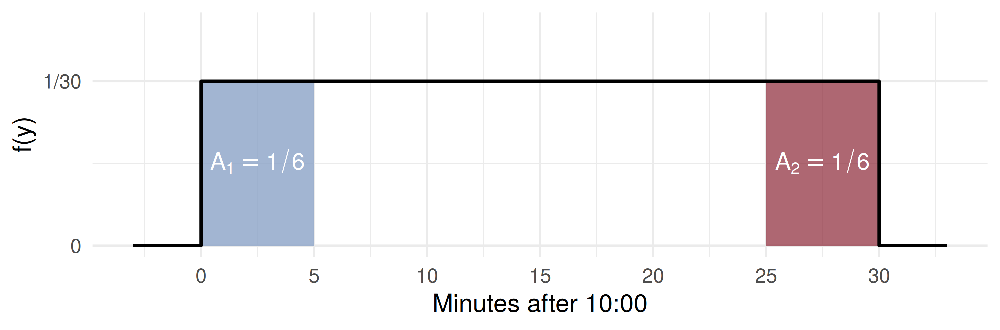
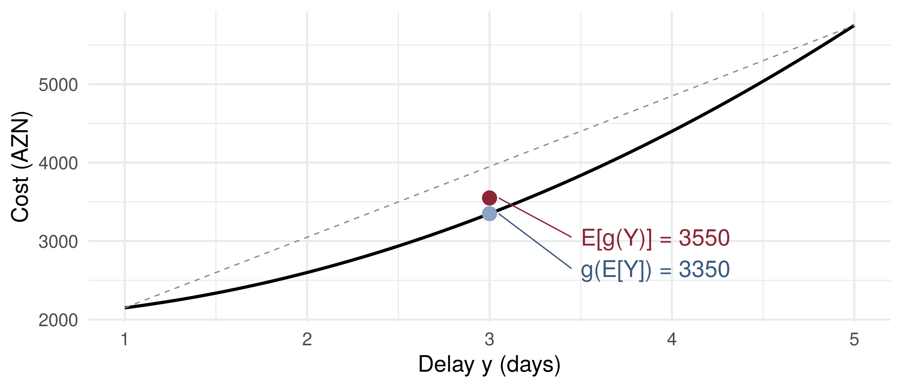

Code
mean E_Y2 var
1.50 2.40 0.15 Code
sim_mean sim_var
1.5011 0.1504 Expected Values for Continuous Random Variables; the Uniform Distribution
ADA University, School of Business
Information Communication Technologies Agency, Statistics Unit
2026-09-24
By the end of this lecture, you will be able to:
Compute \(E(Y) = \int y f(y)\,dy\) and \(V(Y) = E(Y^2) - \mu^2\) for a continuous random variable
Evaluate \(E[g(Y)]\) for a cost or payoff \(g\) with Theorem 4.4, and simplify it with Theorem 4.5
Recognise a uniform model on \((\theta_1, \theta_2)\) and find interval probabilities as length over length
Apply Theorem 4.6, \(\mu = (\theta_1 + \theta_2)/2\) and \(\sigma^2 = (\theta_2 - \theta_1)^2/12\)
Explain why the expected cost of a delay is not the cost of the expected delay
Wackerly §§4.3–4.4
Wednesday opened Chapter 4 with the distribution function \(F(y)\) and the density \(f(y) = dF/dy\). A density is a height, not a probability; probabilities are areas, \(F(b) - F(a)\), and quantiles invert \(F\).
Chapter 3 followed exactly this path: first the distribution, then the mean and variance that summarise it. Today we take that second step for continuous variables. The rule is one substitution: sums become integrals, and \(p(y)\) becomes \(f(y)\,dy\).
Then the first named continuous model, the simplest one there is: the uniform.
The procurement desk’s problem
A plant waits for a replacement turbine part. Delivery takes between 1 and 5 days, any time equally likely. Lost output costs 2,000 AZN plus 150 AZN times the square of the delay in days.
What should the budget line say the part will cost on average?
The tempting answer plugs in the average delay of 3 days: \(2000 + 150 \times 9 = 3350\) AZN. By the end of today we will see why that number is too low, and by exactly how much.
Definition 4.5
The expected value of a continuous random variable \(Y\) is \[E(Y) = \int_{-\infty}^{\infty} y f(y)\,dy,\] provided that the integral exists.
Compare Chapter 3: \(E(Y) = \sum_y y\,p(y)\). The quantity \(f(y)\,dy\) plays the role of \(p(y)\), the probability of a thin slice around \(y\), and the integral adds up value times probability over all the slices.
“Exists” means \(\int |y| f(y)\,dy < \infty\). Every model in this course passes that test.
Theorem 4.4
Let \(g(Y)\) be a function of \(Y\); then \(\displaystyle E[g(Y)] = \int_{-\infty}^{\infty} g(y) f(y)\,dy\).
Theorem 4.5
For a constant \(c\) and functions \(g, g_1, \ldots, g_k\) of \(Y\): \[E(c) = c, \qquad E[cg(Y)] = cE[g(Y)], \qquad E\Big[\sum_{i=1}^k g_i(Y)\Big] = \sum_{i=1}^k E[g_i(Y)]\]
With \(g(Y) = (Y - \mu)^2\) these give, exactly as in Chapter 3, \(\;V(Y) = E[(Y-\mu)^2] = E(Y^2) - \mu^2\).
On a winter evening a grid operator must buy reserve power for \(Y\) hours, \(0 \le Y \le 2\), with density \(f(y) = \tfrac{3}{8}y^2\) (Wackerly’s Example 4.6). Long shortfalls are the likely ones.
\[E(Y) = \int_0^2 y \cdot \tfrac{3}{8}y^2\,dy = \tfrac{3}{8}\cdot\tfrac{y^4}{4}\Big|_0^2 = \tfrac{3}{8}\cdot 4 = 1.5 \text{ hours}\]
\[E(Y^2) = \int_0^2 y^2 \cdot \tfrac{3}{8}y^2\,dy = \tfrac{3}{8}\cdot\tfrac{y^5}{5}\Big|_0^2 = \tfrac{3}{8}\cdot\tfrac{32}{5} = 2.4\]
\[\sigma^2 = 2.4 - 1.5^2 = 0.15, \qquad \sigma = 0.387 \text{ hours} \approx 23 \text{ minutes}\]
mean E_Y2 var
1.50 2.40 0.15 sim_mean sim_var
1.5011 0.1504 The simulation feeds uniform draws through Wednesday’s quantile function, \(F^{-1}(u) = 2u^{1/3}\). Keep that in mind: it is why the uniform matters.
Reserve power costs the operator a fixed 500 AZN fee plus 800 AZN per hour: \(C = 500 + 800Y\).
By Theorem 4.5, with no new integral: \[E(C) = 500 + 800\,E(Y) = 500 + 800(1.5) = 1700 \text{ AZN}\]
\[V(C) = 800^2\,V(Y) = 640000 \times 0.15 = 96000, \qquad \sigma_C = 309.84 \text{ AZN}\]
For a linear cost, the expected cost is the cost of the expected hours. The constant 500 shifts the mean and leaves the spread alone. Hold on to the word linear.
A correspondent bank promises a large transfer “between 10:00 and 10:30”, with no subinterval favoured: it is as likely to land in 10:00–10:05 as in 10:25–10:30. Let \(Y\) be the minutes after 10:00.
Definition 4.6
If \(\theta_1 < \theta_2\), \(Y\) has a continuous uniform distribution on \((\theta_1, \theta_2)\) if and only if \[f(y) = \frac{1}{\theta_2 - \theta_1}, \quad \theta_1 \le y \le \theta_2, \qquad f(y) = 0 \text{ elsewhere.}\]
Definition 4.7: constants that fix a density’s form, here \(\theta_1\) and \(\theta_2\), are its parameters.

Wackerly’s Example 4.7: if exactly one Poisson arrival occurred in \((0, 30)\), its time is uniform there, so \(P(25 \le Y \le 30) = \int_{25}^{30} \tfrac{1}{30}\,dy = \tfrac{5}{30} = \tfrac{1}{6}\). Every 5-minute stretch gets the same \(1/6\).
Theorem 4.6
If \(\theta_1 < \theta_2\) and \(Y\) is uniformly distributed on \((\theta_1, \theta_2)\), then \[\mu = E(Y) = \frac{\theta_1 + \theta_2}{2} \qquad \text{and} \qquad \sigma^2 = V(Y) = \frac{(\theta_2 - \theta_1)^2}{12}.\]
Proof of the mean. \(\displaystyle E(Y) = \int_{\theta_1}^{\theta_2} \frac{y}{\theta_2 - \theta_1}\,dy = \frac{\theta_2^2 - \theta_1^2}{2(\theta_2 - \theta_1)} = \frac{\theta_1 + \theta_2}{2}\), the midpoint.
The variance (Exercise 4.41): \(E(Y^2) = \dfrac{\theta_1^2 + \theta_1\theta_2 + \theta_2^2}{3}\); subtract \(\mu^2\) and the \(\theta_1\theta_2\) terms collapse to \((\theta_2 - \theta_1)^2/12\). It depends on the width only.
In a municipal road-resurfacing tender, the low bid \(Y\) is uniform between 420 and 500 thousand AZN, so \(f(y) = 1/80\).
Conditioning a uniform on a subinterval leaves it uniform on that subinterval: 20 of the remaining 60.
A supermarket chain rounds each cash bill to the nearest 5 qəpik. The rounding error \(E\) (actual minus charged, in AZN) is uniform on \((-0.025, 0.025)\).
Mean zero is not size zero: each bill is off by 1.25 qəpik on average, in one direction or the other.
Delay \(Y\) is uniform on \((1, 5)\) days; cost \(C = 2000 + 150Y^2\) (compare Wackerly’s Exercise 4.47).
\(E(Y) = 3\) and \(V(Y) = \dfrac{4^2}{12} = \dfrac{4}{3}\), so \(E(Y^2) = V(Y) + [E(Y)]^2 = \dfrac{4}{3} + 9 = \dfrac{31}{3} = 10.33\).
Theorem 4.5: \[E(C) = 2000 + 150\,E(Y^2) = 2000 + 150 \times \tfrac{31}{3} = 3550 \text{ AZN}\]
Plugging in the average delay gave 3350. The gap is \(150\,V(Y) = 150 \times \tfrac{4}{3} = 200\) AZN: \(E[g(Y)] \ne g[E(Y)]\) when \(g\) is not linear, and for a convex cost the plug-in number is always too low.

Averaging a curve that bends upward lands above the curve’s value at the average. Long delays cost disproportionately, and the mean of \(Y^2\) remembers them.
A crude tanker’s loading time at a Caspian terminal is \(Y \sim\) uniform on \((18, 30)\) hours. The charterer pays demurrage of 2,000 AZN per hour beyond 24 hours.
Four minutes, in pairs:
Find \(E(Y)\) and \(V(Y)\).
Loading has already passed 24 hours. What is \(P(Y > 27 \mid Y > 24)\)?
What is the expected demurrage bill? Is it \(2000 \times \max(E(Y) - 24,\, 0)\)?
Theorem 4.6: \(E(Y) = \dfrac{18 + 30}{2} = 24\) hours, \(V(Y) = \dfrac{12^2}{12} = 12\), \(\sigma = 3.46\) hours.
Given \(Y > 24\), \(Y\) is uniform on \((24, 30)\): \(P(Y > 27 \mid Y > 24) = \dfrac{3}{6} = 0.5\).
The plug-in answer is \(2000 \times \max(24 - 24, 0) = 0\). A contract that charges only on the bad side has positive expected cost even when the average outcome costs nothing.
A payment arrives at a uniformly distributed time within a 40-minute window. What is \(V(Y)\), in minutes squared?
\(Y\) is uniform on \((0, 2)\). What is \(E(Y^2)\)?
A sealed bid is uniform on \((10, 14)\) thousand AZN. Given that it exceeds 11, what is the probability that it exceeds 13?
| Statement | |
|---|---|
| Definition 4.5 | \(E(Y) = \int_{-\infty}^{\infty} y f(y)\,dy\) |
| Theorem 4.4 | \(E[g(Y)] = \int_{-\infty}^{\infty} g(y) f(y)\,dy\) |
| Theorem 4.5 | \(E(c) = c\), \(\ E[cg(Y)] = cE[g(Y)]\), \(\ E[\sum g_i] = \sum E[g_i]\) |
| variance | \(V(Y) = E(Y^2) - \mu^2\) |
| linear cost | \(E(aY + b) = a\mu + b\), \(\ V(aY + b) = a^2 V(Y)\) |
| Definition 4.6 | \(f(y) = 1/(\theta_2 - \theta_1)\) on \(\theta_1 \le y \le \theta_2\) |
| Theorem 4.6 | \(\mu = (\theta_1 + \theta_2)/2\), \(\quad \sigma^2 = (\theta_2 - \theta_1)^2/12\) |
Continuous expectation is Chapter 3 with \(\sum\) replaced by \(\int\) and \(p(y)\) by \(f(y)\,dy\)
Theorem 4.4 prices any function of \(Y\), and Theorem 4.5 does linear ones with no new integral
A uniform on \((\theta_1, \theta_2)\) gives probability proportional to length; conditioned on a subinterval it stays uniform
Its mean is the midpoint and its variance is width squared over 12
For a non-linear cost, \(E[g(Y)] \ne g[E(Y)]\): a convex cost or a one-sided penalty makes the plug-in answer too low
Wackerly, 7th edition
§4.3: Exercises 4.20 – 4.33; start with 4.20, 4.26, 4.30 and 4.32
§4.4: Exercises 4.38 – 4.53; start with 4.41, 4.45 – 4.47 and 4.51
Redo the delayed part with delivery uniform on \((2, 4)\): same mean, smaller spread. What happens to the 200 AZN gap?
Week 9, Problem Set 2 is open now and closes Sunday 15 November at 23:59 on WeBWorK, covering §§4.3–4.4.
Next class: 11 November, the most important continuous model of all, the normal probability distribution (Wackerly §4.5).
Dr. Samir Orujov
📧 sorujov@ada.edu.az
🏢 Building D, Room D325
🕓 Office hours: Wednesday, 16:00 – 18:00
Slides and readings: sorujov.net/teaching
The median of a uniform on \((\theta_1, \theta_2)\) equals its mean. Would that still hold for the reserve-power density \(\tfrac{3}{8}y^2\)?
Two windows have the same width but different positions. Which of \(\mu\) and \(\sigma^2\) changes?
A penalty that is concave in the delay: is the plug-in cost now too high or too low?

Mathematical Statistics I - Continuous Expectation and the Uniform